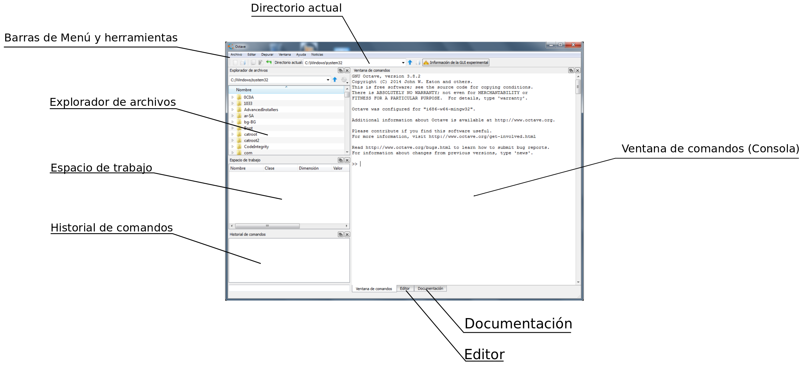

Durante este curso utilizaremos Octave versión 3.8, la última disponible a la fecha de redactar este manual. Es posible que tengas ya instalada otra versión de Octave o quizás Octave-UPM. Cualquiera de esas aplicaciones te puede servir para seguir el curso, pero te recomendamos la instalación de Octave versión 3.8, que trae importantes mejoras respecto de versiones anteriores de Octave.
Los usuarios de Matlab que decidan seguir el curso con Matlab, no deberían encontrar problemas. Si surgiera algún tipo de incompatibilidad entre los ejercicios del curso y Matlab os agradeceremos que nos lo indiquéis, a través del foro, para ir completando una lista de incompatibilidades, que no será grande, y se tratará más bien de pequeños detalles.
En poco tiempo, seguramente antes de acabar este curso, aparecerá la versión 4.0 de Octave, que traerá todavía más mejoras y correcciones de bugs respecto de versiones anteriores. Os tendremos puntuálmente informados a través del foro de novedades de la asignatura.
Para instalar la versión 3.8 de Octave hay que seguir las instrucciones que se dan a continuación, dependiendo del sistema operativo que tengáis instalado en vuestro ordenador.
Los que tengan ordenadores Mac con sistema operativo OSX pueden seguir las instrucciones que se dan en el wiki de Octave [1].
Los usuarios de Linux pueden acceder a la página de descagas del portal web de Octave [2] y seguir las instrucciones que se dan allí.
Los usuarios de sistemas operativos Windows tienen que utilizar la versión del instalador que se ofrece en la página http://mxeoctave.osuv.de [3] para acceder a todas las características de la versión 3.8. Hay que descargar el instalador y ejecutarlo en nuestro ordenador. También ofrecen una versión portable de Octave. Portable se refiere a que no requiere instalación. Se puede copiar en una memoria USB, por ejemplo, y ejecutar en cualquier ordenador con sistema operativo Windows.
[1] http://wiki.octave.org/Octave_for_MacOS_X
Si la instalación ha transcurrido normalmente, al final de la misma deberíamos tener unos accesos directos en el escritorio para poder arrancar Octave en modo consola o en modo gráfico. Si arrancamos Octave en modo gráfico accederemos al Graphic User Interface de Octave, una de las novedades de la versión 3.8 y que se oficializará en la versión 4.0. En la siguiente figura se muestran las diferentes secciones de la ventana gráfica de Octave. (Si ha habido fallos en la instalación leed la nota al final del apartado o plantead las dudas en el foro)
En la parte superior tenemos la barra del menú principal que permite acceder a distintas opciones del programa y, debajo de ella, la barra de botones y herramientas, que permite acceso directo a algunas de estas opciones. Dentro de esta última es importante el desplegable que nos permite conocer o cambiar el directorio actual de trabajo.
Debajo de la barra de herramientas aparecen varias ventanas que vamos a describir:
En la parte izquierda tenemos la ventana del explorador de archivos que nos ofrece también un desplegable para el directorio actual y una ventana que permite acceder al arbol de directorios del ordenador.
Debajo del explorador de archivos está la ventana correspondiente al espacio de trabajo. En ella irán apareciendo las variables que tengamos en memoria, a medida que vayamos ejecutando comandos en Octave.
Debajo del espacio de trabajo hay una ventana con el historial de comandos tecleados desde el inicio de la sesión. Si queremos volver a ejecutar un comando, no tenemos más que hacer doble click con el ratón sobre él y veremos cómo se ejecuta en la ventana de comandos.
La parte derecha de la ventana de Octave está dedicada a la ventana de comandos o consola, que es el lugar destinado a escribir las órdenes que queramos ejecutar, y donde se nos mostrará la salida de resultados. Esta ventana está tabulada por pestañas o solapas(ver parte inferior), que dan acceso a otras dos ventanas: la ventana del editor y la ventana de acceso a la documentación de Octave. El editor es un editor de texto donde podremos crear y modificar los archivos .m de nuestros programas Octave. La pestaña de documentación permite acceder a la documentación de Octave en modo local (sin necesidad de acceso a internet).
En la ventana de comandos, a la que llamaremos también de manera indistinta consola, es donde realizaremos la mayor parte del trabajo. Para poder teclear instrucciones hay que hacer que la ventana adquiera el foco de entrada del usuario pinchando sobre ella. A partir de ese momento el cursor parpadeante nos indicará que está esperando que tecleemos alguna instrucción. El funcionamiento es sencillo: se teclea una instrucción más la tecla Return , (Intro), y Octave responde a través de la misma consola con el resultado de intentar realizar el comando tecleado. Si el comando es correcto nos devolverá el resultado, si no, nos devolverá un texto informando del error detectado por el intérprete de lenguaje de Octave.
Octave tiene comandos de consola que nos permiten acceder a la información que muestran las ventanas del interface gráfico descritas anteriormente. Es conveniente tener agilidad en la utilización de esos comandos, no limitarse a utilizar las ventanas del interface gráfico.
La ruta del directorio actual de trabajo se puede mostrar en consola con el comando pwd. Pruebe a teclear el comando pwd en la ventana de comandos. Verá que se muestra la ruta del directorio actual y que coincide con la mostrada en las barras desplegables del interface gráfico.
Note
pwd es el acrónimo de print working directory
Note
Directorio es cada una de las divisiones lógicas que se hacen en los sistemas de archivos y que pueden contener otros archivos o directorios. Desde la aparición de los interfaces gráficos para los sistemas operativos se los empezó a denominar también carpetas por analogía con las carpetas de los archivos físicos. El icono que se suele utilizar para representar un directorio de un disco es el de una carpeta. En este curso utilizaremos indistintamente las palabras directorio o carpeta para referirnos a ellos. También es habitual la denominación subdirectorios, cuando queremos referirnos a los directorios que están contenidos en uno concreto: ‘Los subdirectorios del directorio ‘programs’, que en terminos gráficos serían las carpetas que están contenidas en la carpeta ‘programs’.
El contenido del directorio actual lo podemos mostrar en la consola tecleando el comando dir o el comando ls, según prefiramos el estilo windows o el estilo linux. Pruebe una vez más a teclear el comando en la ventana de comandos y a comprobar que el contenido de carpetas y archivos que muestra corresponde al contenido del directorio actual mostrado por la ventana Explorador de archivos.
Podemos cambiar el directorio de trabajo desde la consola tecleando el comando cd, (change directory), que admite varias formas de uso:
Tip
Pruebe a teclear varios cambios de directorios a través de la consola. Conviene ejercitarse en el manejo de la consola para moverse por los directorios del ordenador. No solo es eficiente, sino que además es imprescindible en determinados entornos de trabajo en los que no es posible disponer de interface gráfico para Octave. También es importante saber manejar nombres de archivos y sus rutas de acceso a la hora de trabajar en lectura-escritura de ficheros. A medida que teclea los comandos de cambio de directorio, observe como cambia el contenido de los desplegables del directorio actual y de la ventana del Explorador de archivos.
Cada vez que teclea un comando en la consola de Octave se puede observar como se actualiza el contenido de la ventana historial de comandos. En esta ventana se muestran de manera ordenada los distintos comandos tecleados con anterioridad. Se puede volver a ejecutar un comando haciendo doble click sobre él. Para acceder al historial de comandos desde la consola tenemos que teclear el comando history, que mostrará un listado de los comandos tecleados con anterioridad, con un número de comando asignado a cada uno de ellos. Podemos ejecutar un comando de la lista tecleando run_history number, donde number es el número de comando en el listado history. Podemos ejecutar los comandos comprendidos entre dos números haciendo run_history num1 num2, que ejecutará todos los comandos entre el comando num1 y el comando num2.
Para comprobar el funcionamiento de la ventana del espacio de trabajo hay que definir alguna variable. Pruebe a teclear alguna sentencia que asigne valor a alguna variable, por ejemplo, a=3.0 o b=-1. Verá como tras teclear cada una de las asignaciones anteriores aparecen lineas de información en la ventana espacio de trabajo. Eso es lo que denominamos espacio de trabajo, el conjunto de variables existentes y guardadas en memoria a cuyos valores podemos acceder en cada momento. Para acceder al espacio de trabajo desde la consola hay que teclear el comando whos.
Tip
El comando whos nos muestra un listado por consola con las distintas variables existentes y sus tipos de datos. Compruebe, al teclear el comando, que la información mostrada por el comando whos se corresponde con la información mostrada en la ventana espacio de trabajo.
Podemos borrar una variable del espacio de trabajo, o lo que es lo mismo borrarla de memoria, mediante el uso del comando clear nombre_variable. Pruebe el comando clear borrando alguna de las variables que haya definido anteriormente. Compruebe mediante el comando whos y mediante la inspección visual de la ventana del espacio de trabajo que la variable borrada ha dejado de estar en memoria. El comando clear sin argumentos borrará de la memoria todas las variables que tuviéramos definidas hasta el momento.
Tip
El comando clc, (clear console), permite borrar la pantalla de la consola y devolver el cursor a la parte superior izquierda. Este comando no afecta la contenido de las variables, y es un comando que también utilizaremos a menudo.
La pestaña de documentación situada en la parte inferior de la ventana de trabajo nos da acceso a una documentación off-line, (off-line=sin necesidad de conexión a internet). Podemos navegar por las distintas secciones y comandos lo que nos permitirá aprender muchas de las características de Octave y del lenguaje m.
Para acceder a la ayuda desde la consola disponemos de dos comandos muy útiles: el comando help y el comando lookfor. El comando help es de utilidad cuando conocemos el nombre exacto de la función o comando que queremos consultar. Por ejemplo, si tecleamos help run_history podremos ver las distintas opciones que ofrece el comando run_history. El comando lookfor, en cambio, nos devuelve una lista de funciones y comandos que contengan en su documentación la palabra buscada. Podemos hacer una prueba tecleando el comando lookfor history y viendo el listado de funciones y comandos que tienen relación con la palabra history.
Tip
El libro ‘Matlab y matemática computacional‘ de Sagrario Lantarón Sánchez y Bernardo Llanas Juárez sirve de soporte de la asignatura y contiene toda la materia preguntable en examen, siendo por ello el primer material de referencia a consultar.
Hay mucha documentación disponible en la red acerca de la utilización de Octave y Matlab. En general, la mayoría de funciones y comandos funcionan igual en Octave o en Matlab, por lo que se puede utilizar indistintamente la documentación de un programa u otro.
La mejor documentación de Octave es la que hay disponible en la web de Octave y que se actualiza con frecuencia [1]. La mejor documentación de Matlab es la de la web de Matlab y conviene tenerla siempre en cuenta a la hora de aprender el uso de funciones y comandos [2].
A lo largo del curso iremos indicando algunos portales y documentos que contienen también información interesante para profundizar en el conocimiento de Octave y Matlab.
Note
Si tras la instalación no se tienen accesos directos en el escritorio para arrancar Octave se puede intentar lo siguiente:
{kind=link}